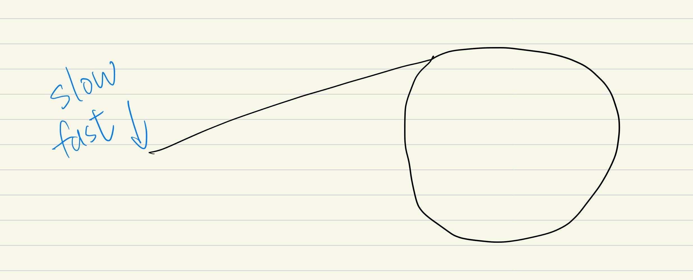
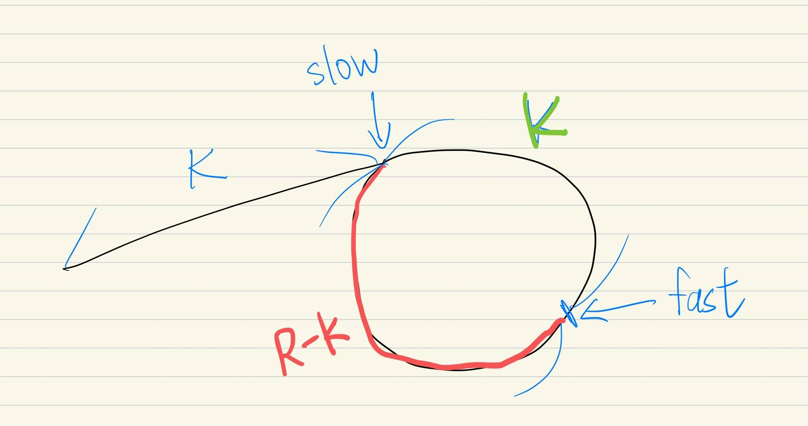
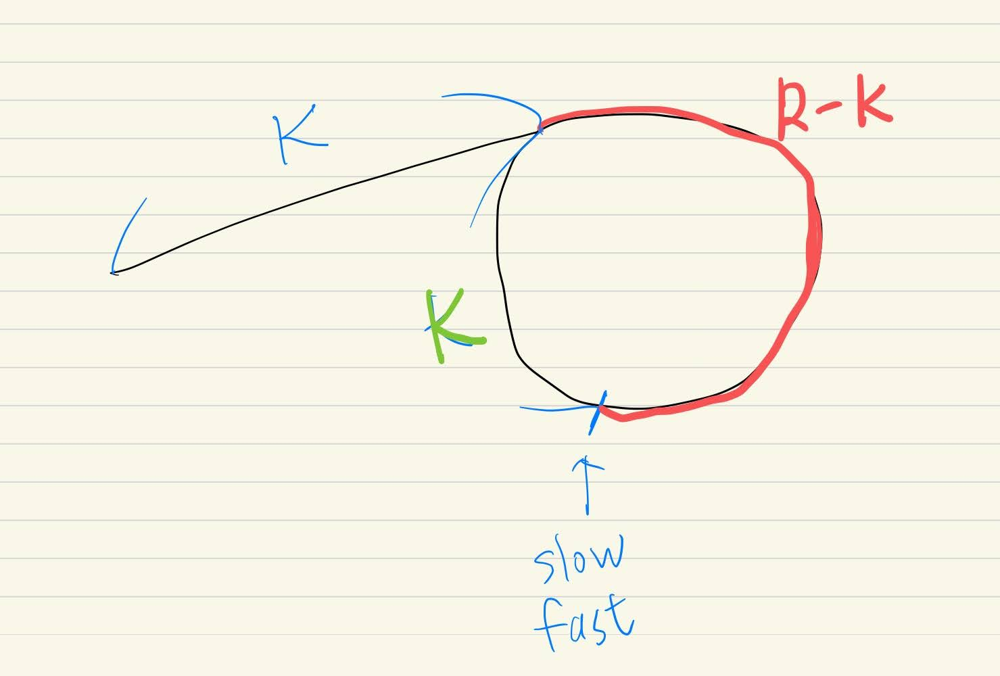

給定一個 Linked List，請寫出一個演算法，告訴我其中有沒有環(cycle/loop)。這是演算法很經典的題目，最簡單的方式就是使用快慢指針 fast/slow，也可以寫成 runner/walker。快指針一次走兩步，慢指針一次走一步，如果他們有碰上，那就是有環。
下圖是個簡化的 linked list，描述一個 linked list 裡面有環(cycle) 大概是長這個樣子。fast/slow 指向的地方是起點。

圖一
不過今天想討論的是，我要怎麼知道，這條 linked list 是從哪一個點開始進入環的呢？
先說解法，在 fast 跟 slow 碰到時，把 slow 移回 linked list 的 head，然後 slow 跟 fast 同時以一次一步的方式前進，最後碰到的地方，就是環的起點。
1 | # Definition for singly-linked list. |
為什麼這樣的演算法有用呢？
我們從頭來看，一開始 fast 跟 slow 都在 linked list 的 head（起點），如上圖。
fast 以一次兩步，slow 以一次一步的速度前進，當 slow 到達環起點的時候，假設走了 k 步，也就是非環部分的長度是 k。然後又因為 fast 走的距離會是 slow 的兩倍，所以 fast 應該也比 slow 多走了 k 步。這邊要注意的是，有可能發生的狀況是，環的長度比 k 小很多，所以當 slow 走到環起點的時候，fast 可能已經在環裡面轉圈圈。
所以假設環的長度是 R，那當 slow 在環起點時，fast 的所在位置我們可以用圖二中的綠色 K = mod(k, R) 來代表。此時，從 fast 的角度來說，我們也可以說，fast 落後 slow R-K 步（fast 正看著 slow 的屁屁）

圖二
然後大家繼續走，所以 fast 會以每次一步的速度，縮短跟 slow 的距離。在經過 R-K 步後，fast 追到了 slow。如下圖，fast 跟 slow 站在同一個點，這個點會是哪呢？因為經過了 R-K 步，slow 從環起點也走了 R-K 步，所以就是在環起點 R-K 步的地方遇上了。此時相遇的點，到環起點的距離就會是 R-(R-K) 也就是（綠色的）K 步。

圖三
至此，我們知道了，在 fast 跟 slow 相遇的時候，從 linked list 的起點到環起點，長度是 k，而相遇點到環起點的距離是（綠色的）K，而且綠色的 K 是 mod(k, R)。既然如此，我們就把 slow 移回 linked list 起點，然後 fast 跟 slow 以一次一步的速度一起走，直到他們相遇的點，就會是環起點。當然，如果 k 比環的長度長很多的話，fast 會在環裡面轉圈圈直到在環起點跟 slow 相遇。
Reference